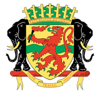

<?php $pageTitle = "Produits par Industrie"; ?>
<?php include('header.php'); ?>

  <style>
    .hero-about {
      background: url('Sanstitre.jpg') center/cover no-repeat;
      position: relative;
      padding: 120px 0;
      color: white;
    }

    .hero-about::before {
      content: '';
      position: absolute;
      top: 0; left: 0;
      width: 100%; height: 100%;
      background-color: rgba(36, 37, 36, 0.79); Vert de la République du Congo
      /* backdrop-filter: blur(4px); */
      z-index: 1;
    }

    .hero-about .container {
      position: relative;
      z-index: 2;
    }

    .section-icon {
      font-size: 2rem;
      color: #FFCC00; /* Jaune du drapeau */
    }

    /* Navbar */
    .navbar {
      background-color: #006400; /* Vert du drapeau */
    }
    .navbar .navbar-brand {
      color: #FFCC00; /* Jaune */
    }
    .navbar .navbar-nav .nav-link {
      color: #FFCC00; /* Jaune */
    }
    .navbar .navbar-nav .nav-link.active {
      color: #D40000; /* Rouge du drapeau */
    }

    /* Footer */
    footer {
      background-color: #006400; /* Vert du drapeau */
    }
    footer p {
      color: #FFCC00; /* Jaune */
    }

    /* Cards */
    .card {
      border-color: #006400; /* Vert du drapeau pour les bordures */
    }
    .card-title {
      color: #D40000; /* Rouge du drapeau pour les titres */
    }
  </style>

  <!-- Hero -->
  <section class="hero-about text-center">
    <div class="container">
      <h1 class="display-4 fw-bold">À propos de nous</h1>
      <p class="lead">La Direction Générale du Developpement Industriel est l'une des directions qui assiste le ministre dans ses actions en matiere du developpement industriel.</p>
    </div>
  </section>

  <!-- À propos -->
  <section class="py-5">
    <div class="container">
      <div class="row align-items-center mb-5">
        <div class="col-md-6">
          
        </div>
        <div class="col-md-6">
          <h2 class="mb-3">Qui sommes-nous ?</h2>
          <p>En vue de l'attribution consignée dans le decret n0 2022-148 du 1er Avril 2022, La DGDI est ainsi chargée de mettre en ouevre la politique industrielle du gouvernement.</p>
          <p>Oreinter et encourager l'intégration du tissu industriel national.</p>
        </div>
      </div>

      <div class="row text-center">
        <div class="col-md-4">
          <i class="bi bi-globe2 section-icon mb-2"></i>
          <h5>Nos missions</h5>
          <p>Assurer le controle industriel en vue de verifier le respect de la reglementation en vigueur et les réalisations des entreprises bénéficiaires de la charte nationale des investissement.</p>
        </div>
        <div class="col-md-4">
          <i class="bi bi-award section-icon mb-2"></i>
          <h5>Qualité certifiée</h5>
          <p>Nos produits répondent aux normes ISO et respectent les engagements RSE les plus stricts.</p>
        </div>
        <div class="col-md-4">
          <i class="bi bi-people section-icon mb-2"></i>
          <h5>Équipe passionnée</h5>
          <p>Des ingénieurs, chercheurs et designers unis autour d’un objectif commun : l’excellence.</p>
        </div>
      </div>
    </div>
  </section>

<!-- Bouton retour en haut -->
<button id="btnTop" class="btn" title="Retour en haut">
  <i class="bi bi-arrow-up"></i>
</button>

<!-- Script pour le bouton de retour en haut -->
<script>
  const btnTop = document.getElementById("btnTop");
  window.addEventListener("scroll", () => {
    btnTop.style.display = window.scrollY > 200 ? "block" : "none";
  });

  btnTop.addEventListener("click", () => {
    window.scrollTo({ top: 0, behavior: "smooth" });
  });
</script>

<?php include('footer.php'); ?>

<!-- Style supplémentaire pour positionner et styliser le bouton -->
<style>
  #btnTop {
    position: fixed;
    bottom: 20px;
    right: 20px;
    background-color: #006400; /* Fond vert */
    color: white;
    border: none;
    border-radius: 50%;
    padding: 15px;
    font-size: 24px;
    box-shadow: 0 4px 6px rgba(0, 0, 0, 0.2);
    cursor: pointer;
    display: none;
  }

  #btnTop:hover {
    background-color: #D40000; /* Changer la couleur au survol */
  }
</style>
